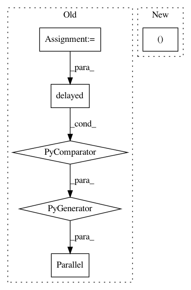

3daedc17ddab948752f3d6b90e56b177ea77ec42,nilearn/mass_univariate/permuted_least_squares.py,,permuted_ols,#Any#Any#Any#Any#Any#Any#Any#,252
Before Change
// TODO: to speed this up, we could threshold scores_original_data
n_scores = n_descriptors * n_regressors
ravelized_scores = np.ravel(scores_original_data)
ret = joblib.Parallel(n_jobs=n_jobs)(joblib.delayed(_convert_to_pvalues)
(h0_fmax, ravelized_scores[chunk])
for chunk in gen_even_slices(
n_scores + 1, min(n_scores, n_jobs)))
pvals = np.concatenate(ret).reshape((n_regressors, n_descriptors))
return pvals, scores_original_data, h0_fmax
After Change
intercept_test=intercept_test, random_state=0)
for n_perm_chunk in n_perm_chunks)
// reduce results
scores_as_ranks_parts, h0_fmax_parts = zip(*ret)
h0_fmax = np.hstack((h0_fmax_parts))
scores_as_ranks = np.zeros((n_regressors, n_descriptors))
for scores_as_ranks_part in scores_as_ranks_parts:
In pattern: SUPERPATTERN
Frequency: 3
Non-data size: 6
Instances
Project Name: nilearn/nilearn
Commit Name: 3daedc17ddab948752f3d6b90e56b177ea77ec42
Time: 2014-02-26
Author: virgile.fritsch@gmail.com
File Name: nilearn/mass_univariate/permuted_least_squares.py
Class Name:
Method Name: permuted_ols
Project Name: D2KLab/entity2rec
Commit Name: 6254b5540c4e114439b9930fe41c20542155ecc9
Time: 2017-12-13
Author: enricopalumbo0@gmail.com
File Name: entity2rec/entity2rec.py
Class Name: Entity2Rec
Method Name: _compute_features
Project Name: ntucllab/libact
Commit Name: b70e10b94af7c7e4c4ed88e6516134580c389a34
Time: 2015-03-19
Author: yangarbiter@gmail.com
File Name: libact/query_strategies/variance_reduction.py
Class Name: VarianceReduction
Method Name: make_query